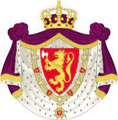

Antavla
32704198075 Prinsessa Kristina Ingedotter
Prinsessa av Sverige.

Far:
Inge "den äldre" Stenkilsson
Född:
Uppsala (C).
[1]
Död:
1122 Kiev, Russia.
[1]
Barn med
32704198074 Storfursten Mstislav I Vladimirovichden store av Kiev (1076 - 1132)
Barn:
Ingeborg av Kiev (Novgorod) (1099 - 1137)
Personhistoria
Årtal
Ålder
Händelse
1076
Partnern
32704198074 Storfursten Mstislav I Vladimirovichden store av Kiev
föds 1076 Kiev, Russia
1099
Dottern
16352099037 Prinsessa Ingeborg av Kiev (Novgorod)
föds 1099 Kiev, Ukraina
[2]
1122
Död 1122 Kiev, Russia
[1]
Källor
[1]
Wikipedia
[2]
Anette Guldager Boye